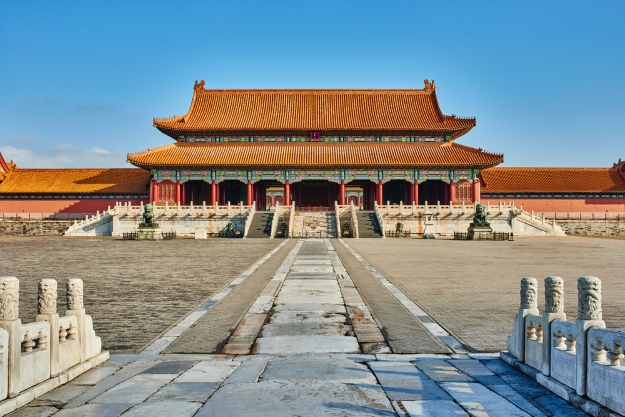
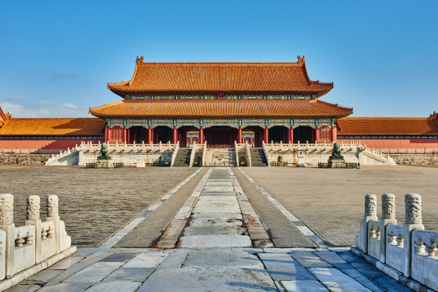

Beijing Landmarks
GREAT WALL 长城
TIANANMEN SQUARE 天安门广场
FORBIDDEN CITY 紫禁城
- The Great Wall is a military fortification in ancient China. It is a tall, strong and continuous long wall, used to limit the actions of ancient enemies. The construction of the Great Wall has a history of thousands of years, and it will be repaired and lengthened in almost every dynasty. So far, the total length of the Great Wall is about 13,171 miles. In 1987, the Great Wall was listed as a world cultural heritage.
- Tiananmen Square is a city square located in the center of Beijing, China, and is one of the largest city squares in the world. It is located at the south gate of Beijing Imperial City in Ming and Qing Dynasties. There is a flag pole at the north end of the square, and flag-raising and flag-lowering ceremonies are held every day with sunrise and sunset. Hanging on the tower of the square is the country's first chairman, Mao Zedong. Tiananmen Square is 800 meters long from north to south and 500 meters wide from east to west, with a total area of about 440,000 square meters.
- The Forbidden City was first built in 1406. It is located in the center of Beijing's central axis. It covers an area of 720,000 square meters and a building area of about 150,000 square meters. It is the largest existing palace-shaped building in the world. The Forbidden City in Beijing is the first batch of national key cultural relics protection units and the first batch of national 5A-level tourist attractions. It was selected into the "World Cultural Heritage" list in 1987. The Forbidden City is now the Palace Museum, and its collections are mainly based on the collections of the courts of the Ming and Qing dynasties. It is a national first-class museum.
Shanghai Landmarks
THE BUND 外滩
SHANGHAI TOWER 上海中心大厦
JINMAO TOWER 金茂大厦
- The Bund is a waterfront area and protected historic district in central Shanghai. The area was formerly an international settlement of Shanghai, along the west bank of the Huangpu River in the east of the Huangpu District. The Bund usually refers to the buildings and piers on this section of the road, as well as some adjacent areas. From the 1860s to the 1830s, it was a rich and powerful center for foreign institutions in Shanghai, operating as a legally protected treaty port.
- The Shanghai Tower is a 128-story, 632-meter-high mega-skyscraper. It is the tallest building in China and the third tallest in the world. It has the second fastest elevator in the world, with a top speed of 20.5 meters per second, and construction work on the tower began in November 2008 and was topped out on August 3, 2013. Exterior works were completed in summer 2015 and opened in February 2015.
- The Jin Mao Tower is a 420.5-meter-high, 88-story iconic skyscraper located in Shanghai, China. It contains a shopping mall, offices and the Grand Hyatt Hotel in Shanghai, among others. Along with Oriental Pearl Tower, Shanghai World Financial Center and Shanghai Tower.
Canton, Macao and Hongkong Landmarks
CANTON TOWER 广州塔
HONGKONG ZHUHAI MACAO BRIDGE 香港珠澳大桥
BANK OF CHINA TOWER 中银大厦
- Canton Tower is a 604-meter (1,982 ft) multi-purpose observation tower located in the city of Guangzhou. The tower was topped out in 2009 and opened on 29 September 2010. The tower briefly held the title of world's tallest tower, surpassed by Tokyo SkyTree in 2008.
- The HongKong Zhuhai Macao Bridge is a 55-kilometer-long bridge-tunnel system. It is the longest cross-sea passage in the world and the longest fixed passage on the open sea in the world. The Hong Kong-Zhuhai-Macao Bridge spans the Lingding and Jiuzhou corridors, connecting Hong Kong, Macau and Zhuhai, the three major cities in China's Pearl River Delta. The design life of the Hong Kong-Zhuhai-Macau Bridge is 120 years. The construction cost of US$18.8 billion was financed by bank loans and shared between the governments of mainland China, Hong Kong and Macau. On October 24, 2018, the Hong Kong-Zhuhai-Macau Bridge was opened to the public.
- The Bank of China Tower is a skyscraper located in Central, Hong Kong. It is the headquarters of Bank of China Limited in Hong Kong. One of Hong Kong's most recognizable landmarks, the building is notable for its distinctive shape and design, consisting of a triangular frame covered in glass curtain walls. The building is 315 meters high including a 52.4-meter spire. The building is the fourth tallest skyscraper in Hong Kong. It was the tallest building in Hong Kong and Asia from 1989 to 1992, and the first supertall skyscraper outside the United States, the first to break the 305-meter mark.
Tibet Landmarks
POTALA PALACE 布达拉宫
JOKHANG TEMPLE 大昭寺
MOUNTAIN EVEREST 珠穆拉玛峰
- The Potala Palace is a dzong in Lhasa, Tibet. The palace is named after Mount Potalaja, the legendary abode of Avalokiteshvara. Measuring 400 meters from east to west and 350 meters from north to south, the building's sloping stone walls are an average of 3 meters thick and 5 meters thick at the bottom, with copper poured into the foundations to help withstand earthquakes. The thirteen-story building contains more than 1,000 rooms, 10,000 shrines and approximately 200,000 statues.
- The Jokhang Temple is a Buddhist temple located in the Bajiao Square in Lhasa, the capital of the Tibet Autonomous Region of China. Tibetans generally consider this temple to be the holiest and most important temple in Tibet. The temple is currently maintained by the Gelug sect, but they accept followers of various sects of Buddhism. The architectural style of the temple is a fusion of Indian, Tibetan and Nepalese designs.
- Mount Everest is the highest peak in the Himalayas. across the China-Nepal border. It has an altitude of 8,848.86 meters. Mount Everest attracts many climbers, including experienced ones. But Everest brings dangers like altitude sickness, weather and high winds, as well as dangers from avalanches and the Khumbu Glacier. As of 2019, more than 300 people have died on Mount Everest, and the remains of many of them are still on the mountain.
China
Contact
Legal
Visitors can learn more knowledge about China through my website. Let them know about Chinese culture and architecture with a long history. Finally, I also hope that visitors can go to China to experience Chinese culture and characteristics in person.
ytian6167@baysidehighschool.org
Terms of use
©2022 Copyright China • All Rights Reserved.

 
